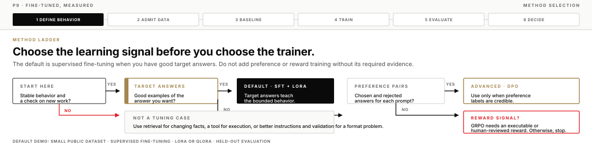
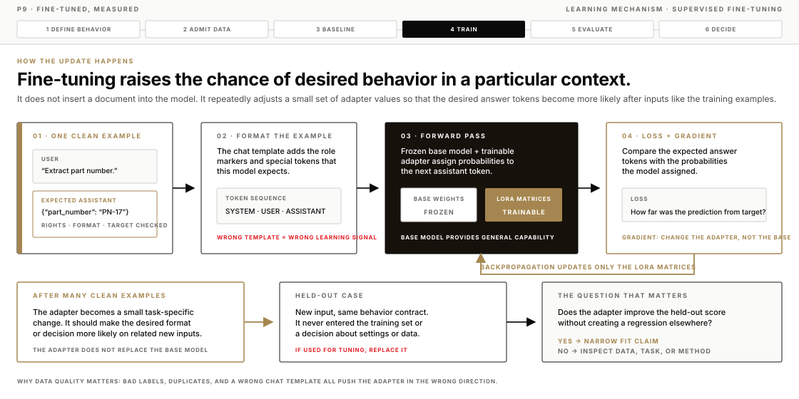
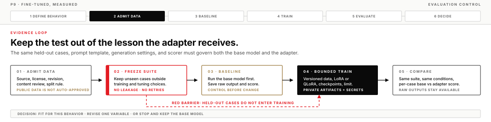
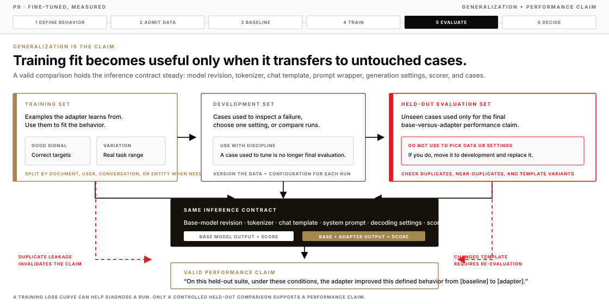

Friday PM · P9 · AI Harness Bootcamp
Fine-tuned, measured
Follow a private adapter-training run from public data to held-out evaluation. The important question is not whether the job finishes, but whether the adapter improves one defined behavior on work it never saw during training.
Change one behavior, then measure the change
Fine-tuning changes a model’s parameters with examples. It can make one stable behavior more reliable, such as a house output format, a classification boundary, or an extraction schema. It is a useful option when the work repeats, the desired result is clear, and you can check the result on new examples.
It is not a way to keep facts current, repair an unclear task, or make private data safe by putting it into a model. Those are different problems, and they need different controls.
Today, the instructor runs one small private adapter job with public Hugging Face data. Your work is to follow the chain of evidence: the data that entered the run, the base-model baseline, the configuration, and the held-out results that support or limit the final decision.
What you will leave with
- A rule to choose prompting, retrieval, tools, validation, or fine-tuning.
- A data review list for a training dataset.
- A hardware map for local preparation, small adapter tests, and cloud training.
- A run record that identifies data, model, adapter, compute, evaluation, and decision.
- A path for Linux, macOS, Hugging Face Jobs, and RunPod.
Before the demonstration
- Carry forward P8’s standard: a model change is an evidence exercise, not a preference.
- The instructor’s Job, adapter, logs, repository, and tokens stay private.
- Use only public data or data you have written permission to use.
- Do not upload personal, organizational, regulated, secret, or unlicensed data to a training service.
- Bring one candidate behavior from your work, with its input, expected output, and acceptance check.
Lead demonstration
The instructor prepares the public dataset and held-out suite before the run begins. On screen, they show the base-model results, start a bounded private Hugging Face Job, inspect its logs and checkpoints, then score the adapter on the same held-out cases. The score table—not the loss chart—supports the final claim.
State the input, output, and acceptance check.
Check rights, source, content, risk, and split.
Save base-model results before training.
Run a bounded LoRA or QLoRA job.
Keep, revise, or stop from held-out evidence.
The ideas
Fine-tuning is one way to change a system. Start with the smallest control that can plausibly solve the problem, then test whether it did.
Choose a control method
| Problem | Start with | Why not fine-tuning first? |
|---|---|---|
| Facts change in source documents. | Use retrieval with source links and freshness rules. | Model weights do not show the current supporting source. |
| The task needs a calculation, query, action, or fixed transformation. | Use a tool and validate its input and output. | The task needs execution or a rule. |
| A prompt does not clearly state an output schema. | Improve the instruction and validate the schema. | Training can hide an instruction error. |
| One repeated behavior has good examples and a clear check. | Run a small LoRA or QLoRA test. | This is a useful tuning case. |
| You cannot describe or score the behavior. | Define the task and evaluation first. | A completed run does not prove an improvement. |

Use an adapter
The base model is the original model and its original parameters. Full fine-tuning changes many or all of those parameters, which increases the memory, storage, and recovery work. That is rarely the first practical move for a narrow operational behavior.
A LoRA adapter adds small trainable matrices to selected model layers while the base weights stay fixed. QLoRA keeps the base model in a low-bit form during adapter training, which can reduce memory use further. In both cases, the output is an adapter that belongs with a specific base model and configuration.
That separation is useful because it leaves the base model intact. You can attach the adapter only where it passed, compare it directly with the base model, and remove it when the evidence no longer supports its use. An adapter is a controlled change, not a new general-purpose model.
How fine-tuning improves a specific behavior
Fine-tuning does not add a database of facts to a model. It changes the model’s tendency to produce one sequence of tokens rather than another when it sees a particular kind of input. A good training example says, in effect, “when the context looks like this, this answer pattern is the one we want.”
During supervised fine-tuning, the model reads a formatted example and assigns probabilities to the next answer tokens. The training loss measures the gap between those probabilities and the expected assistant answer. Backpropagation then adjusts trainable values in the adapter so that the desired tokens become more likely in similar contexts. Repeating this across varied, correct examples can make the behavior more reliable.
The base model still supplies the broad language and reasoning capability. The adapter supplies a small, task-specific shift. That is why a narrow, clean dataset can help with a stable format or repeated decision pattern, while a noisy dataset, wrong chat template, or inconsistent labels can make the model less reliable in exactly the same way.

What each method optimizes
| Method | Signal it uses | What the update tries to make more likely | Main risk |
|---|---|---|---|
| Supervised fine-tuning | A target answer or response form. | The target tokens after a matching input. | Copying a narrow pattern without transferring it to new cases. |
| DPO | A chosen and rejected answer for the same prompt. | The chosen answer relative to the rejected answer. | Preference labels that encode a reviewer’s shortcut, bias, or formatting preference instead of the real goal. |
| GRPO | A reward from a verifier or disciplined review process. | Outputs that score well under the reward. | Reward hacking: the model finds a way to raise the score without doing the intended work. |
| LoRA or QLoRA | The signal from one of the methods above. | The same task behavior, through a small adapter rather than a full weight update. | Assuming a memory-saving method changes the quality of the learning signal. |
Match the method to the learning signal
Supervised fine-tuning, or SFT, is the default. Use it when you have good examples of the exact answer or response form you want. The instructor demonstration belongs here. For prompt/completion data, train the completion rather than the prompt. For conversational data, apply the model’s correct chat template and, where the template supports it, calculate loss on assistant messages rather than on the user or system text.
DPO is a preference method. It needs a credible pair for each prompt: a chosen response and a rejected response. It is useful when the difference between acceptable and preferred behavior is what you need to teach. A pile of ordinary answers is not a DPO dataset.
GRPO is a reward-driven method. It needs a reward you can execute or review with discipline, such as a verifier for a structured result. It introduces more moving parts than this demonstration needs. Do not use it because it is newer; use it only when the reward really measures the result you care about.
LoRA is the default adapter method for each of these paths. Use QLoRA when quantizing the base model makes the run fit the available memory. More advanced choices, such as LoftQ initialization, DoRA, or activated LoRA for specialized adapter serving, belong after a baseline adapter and a valid evaluation set exist. They are not substitutes for better data or a clearer task.
| Method | Learning signal | Use it when | P9 position |
|---|---|---|---|
| SFT + LoRA/QLoRA | Good target answer or response form. | You can show the behavior you want and score it on new work. | Default. Use this for the instructor demonstration. |
| DPO + LoRA | Credible chosen and rejected response pair. | Preference, not merely correctness, is the behavior you need to improve. | Advanced follow-on after you can evaluate SFT. |
| GRPO + adapter | Executable or human-reviewed reward. | A reward can judge the actual result with enough discipline to trust it. | Explain only. It is not the small public-data demonstration. |
| Full fine-tuning | Task-specific evidence plus a reason adapters are insufficient. | You have a concrete operational need and the compute, storage, and recovery plan. | Not a P9 default. Start with an adapter and prove its limits first. |
Do not use training loss as the result
Training loss tells you how closely the run fits its training examples. It cannot tell you whether the adapter helps on new work, whether the data leaked answers into the test, or whether the adapter damaged a nearby behavior.
Build a held-out suite before training and keep those cases outside the training input. Then run the base model and adapter on the same cases, under the same prompt, decoding settings, and score rule. This gives the comparison a control instead of a story. If you use a held-out case to pick settings or edit the dataset, retire it from the final suite and replace it with a new unseen case.


How to read published performance comparisons
Published studies can show what a fine-tuning method achieved under a stated setup. They cannot predict your result. A reported score depends on the model, training data, data volume, prompt format, optimization choices, metric, and evaluation suite. Read the task and metric before you read the number.
| Study and setup | Baseline | Fine-tuned result | Metric and evaluation condition | What it does—and does not—show |
|---|---|---|---|---|
| Hu et al., LoRA GPT-3 175B on WikiSQL. | Full fine-tuning: 73.8. | LoRA: 74.0 with 37.7M trainable parameters. | Logical-form validation accuracy, percent. | In this study, LoRA matched or slightly exceeded full fine-tuning on this task. It does not show that LoRA will beat full fine-tuning on every task. |
| Hu et al., LoRA GPT-3 175B on MNLI-matched. | Few-shot GPT-3: 40.6 validation accuracy. | Fine-tuned GPT-3: 89.5 validation accuracy. | MNLI-matched validation accuracy, percent. | A task-specific supervised run can greatly improve a base or few-shot result when the task and labels are well defined. It is not a general capability score. |
| Dettmers et al., QLoRA LLaMA 7B with FLAN v2. | LLaMA 7B, no tuning: 35.1. | QLoRA instruction tuning: 44.5. | Mean 5-shot MMLU test accuracy, percent. | Shows an instruction-tuning result for this model and data. It also shows why the training dataset can matter more than a method name. |
| Dettmers et al., QLoRA LLaMA models, Alpaca/FLAN v2. | BF16 adapter tuning mean: 53.0. | NF4 + double-quantized QLoRA mean: 53.1. | Mean 5-shot MMLU accuracy across 7B, 13B, 33B, and 65B conditions. | In this experiment, the 4-bit NF4 configuration preserved the reported mean quality of BF16 adapter tuning. It does not guarantee equal quality for another model or quantization path. |
| Liu et al., DoRA LLaMA 7B on eight commonsense tasks. | LoRA average accuracy: 74.7. | DoRA average accuracy: 78.4. | Average accuracy across BoolQ, PIQA, SIQA, HellaSwag, WinoGrande, ARC-e, ARC-c, and OBQA. | Shows a controlled method comparison under the paper’s settings. DoRA may be worth an advanced comparison only after a LoRA baseline and evaluation suite exist. |
| Rafailov et al., DPO GPT-J SFT model on Reddit TL;DR. | Best reported PPO win rate: 57%. | DPO win rate: about 61%. | Average win rate against reference completions on the TL;DR test split, at the study’s selected sampling temperatures. | Shows a preference-optimization comparison, not a general SFT result. The evaluation depends on the preference setup and the study’s judging protocol. |
Use the table as a reading exercise, not a planning spreadsheet. The right P9 question is: “What does my base model do on my held-out cases, under my exact inference contract?” Your own baseline-versus-adapter table is the only performance evidence that supports a decision for your workload.
Use this sequence
- Write a behavior contract that names the input, output, acceptance check, non-goal, and owner.
- Build the held-out suite before training. Keep close duplicates, near-duplicates, and template variants in the same split.
- Capture base-model results, including raw output, settings, scores, and failure types.
- Start with a small model, narrow dataset, short run, and one adapter configuration. Use a fixed seed and record it.
- Read the failures before changing settings. Check data fit, format, instructions, tool need, evaluator, model limit, truncation, and role order.
- Change one relevant variable at a time, and version the data and configuration for every run. Do not tune on the held-out suite.
- Test the intended serving path before release. The chat template, tokenizer, generation defaults, quantization, and adapter-loading path can all change behavior.
Review training data before use
Every training example makes a claim about the behavior you want. Before you admit a dataset, read its card and real rows. Check the license, source, intended use, fields, splits, and revision rather than relying on the dataset name alone.
Look for duplicate prompts, boilerplate answers, wrong languages, personal data, hidden instructions, biased labels, and content that does not belong in the task. A public download is not automatically permitted, safe, or useful for your purpose.
Hugging Face Datasets is the main discovery route because a repository can include a dataset card, revision history, files, and discussion with the data. Use the dataset viewer for a first look, then read the repository material and pin the revision you actually use.
Kaggle is a second useful discovery route. Read the description, license, publisher, update history, files, and discussion before you use a dataset. Neither service gives you ownership or permission for your intended use.
Dataset admission record
Complete this record before a dataset enters a training run. A blank answer is a reason to pause and investigate, not a field to skip.
| Field | Record |
|---|---|
| Purpose | The target behavior and its non-goals. |
| Source identity | Dataset URL, owner, revision, and access date. |
| Rights and policy | License, required attribution, terms, and intended-use permission. |
| Contents | Fields, languages, size, sample rows, and needed conversion. |
| Format review | Rendered chat template, role order, empty targets, truncation rate, and special-token handling. |
| Safety review | Personal data, confidential data, harmful content, hidden instructions, bias, and removal decision. |
| Split rule | Training, validation, held-out split, and duplicate-control method. |
| Decision | Admit, admit with limits, or reject. Name an owner and reason. |
Before you move on
Keep one behavior contract and one dataset admission record from this session. When you run an adapter later, begin only after the base-model baseline, data boundary, held-out cases, and rollback path are ready.
If you get stuck
- The task changes often. Fine-tuning will preserve yesterday’s behavior while the target keeps moving. Stabilize the task, instructions, or retrieval path first.
- The dataset card does not establish permission or provenance. Reject the dataset or find a source that does. Missing evidence is a stop condition, not a gap to explain away.
- The run uses too much memory. Save the exact error and configuration. Then reduce model size, sequence length, or batch plan; use QLoRA where supported; or move the unchanged project to cloud GPU compute.
- Loss decreases but held-out scores do not improve. Keep the base model, then inspect data quality, split leakage, task fit, evaluator quality, template mismatch, and whether fine-tuning was the right control method.
- The adapter passes in a notebook but fails when served. Compare the tokenizer, chat template, system prompt, generation defaults, quantization, and adapter-loading path. Treat the serving path as a separate evaluation target.
- The cloud run ends but artifacts are missing. Do not stop compute until the checkpoint, adapter, configuration, logs, and evaluation evidence are verified in persistent private storage.
- You want to publish the adapter. Stop for release review. Confirm the base-model license, data rights, policy approval, model card, evaluation limits, and removal path first.
Source shelf
- LoRA: Low-Rank Adaptation of Large Language Models, QLoRA: Efficient Finetuning of Quantized LLMs, DoRA: Weight-Decomposed Low-Rank Adaptation, and Direct Preference Optimization: primary studies behind the source-qualified performance comparisons above.
- Hugging Face TRL — SFTTrainer: supervised fine-tuning formats, loss masking, packing, and trainer guidance.
- Hugging Face TRL — DPOTrainer and GRPOTrainer: preference and reward-driven methods that need different evidence from SFT.
- Hugging Face PEFT — Quicktour and PEFT quantization: LoRA, QLoRA, and current adapter guidance.
- Hugging Face Transformers — Chat templates: role formatting and generation-template controls.
- Hugging Face Hub — Run and manage Jobs: managed compute, hardware, logs, secrets, and timeouts.
- Hugging Face Datasets — Load and Dataset Cards: data loading, revisions, splits, and documentation.
- Hugging Face Evaluate, Lighteval, and Model Cards: evaluation infrastructure, reproducible tasks, and model documentation.
- Kaggle Datasets: a second data source. Check the publisher, license, files, update history, and discussion.
- Unsloth — Fine-tuning LLMs guide, Axolotl — Installation, and MLX LM: Linux and macOS training paths.
- RunPod Pods, storage, and pricing: Pod, storage, and spend-control guidance.